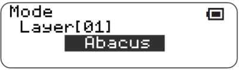
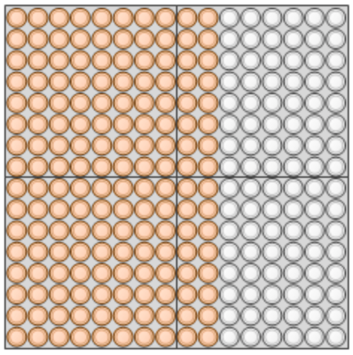
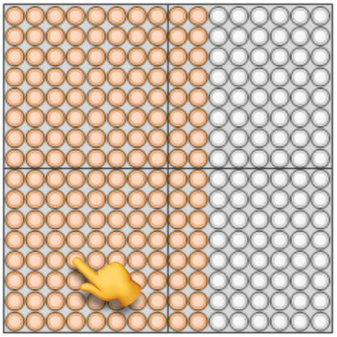
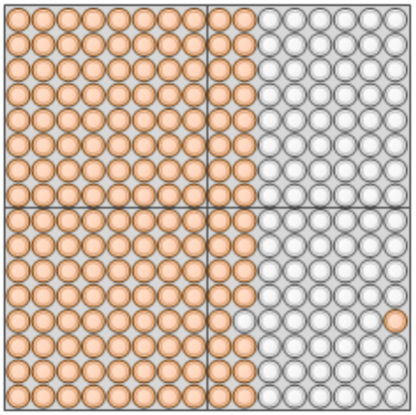
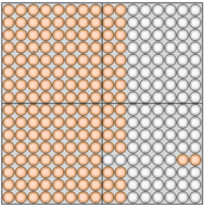
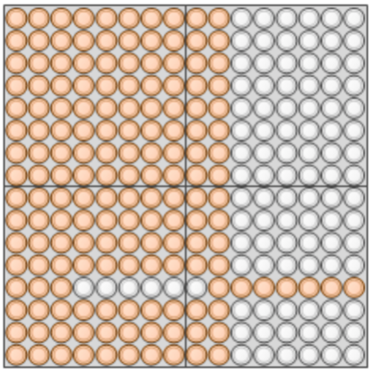
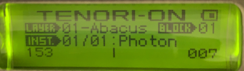

Abacus layer type
This function adds a new Abacus layer type.
This layer type can be selected by changing the layer mode.

Usage
The Abacus layer is designed for realtime use, like the Solo layer.
Each row has 10 beads. Pressing a bead will move that bead and any “inner” beads over to the other side. So, if you tap a bead attached to beads on its left side, it and all the beads to its right will move to the right.
When the first bead moves, the layer will play the sound of the note at the layer’s velocity setting. Every subsequent bead will be played slightly more quietly. This creates a sort of a tape delay echo effect.
This is described below.
|  | The Abacus layer has 16 rows with 10 beads in each row |
|---|---|
|  | Pressing a bead on the left will move that bead and all the beads to the right of it… |
|  | …over to the right one by one, playing the sound… |
|  | …as each one arrives on the right… |
| … | … |
|  | …until all 7 beads are on the right. Pressing [L4] during or after this will display “153 |
Tapping an unmoved bead on a row mid-animation will re-launch the animation from that point and moment in time. This can be used to send beads back in the opposite direction. A useful technique, if you want to play the same note several times, is to alternate tapping the first and last beads of a row.
Other functionality:
- The Clear button at the top of the device instantly resets the bead locations with no sound.
- The Loop Speed setting and Tempo setting both affect the speed at which the beads move.
- Pressing L4 shows total counts of the beads on the left and right sides in the LCD display. Note this is the final count as will be the case when all ongoing animations have finished. (That is, you don’t have to wait for animations to complete to get the number of beads that will end up on each side.)

Some notes:
- Beads continue moving in the background even when the layer isn’t visible.
- Currently there is no MIDI support on this layer type.
Compatibility Issues
You cannot load songs or blocks with an Abacus layer type in previous versions.
Releases
First included in A029.